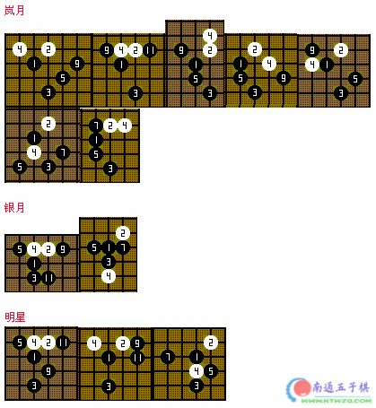
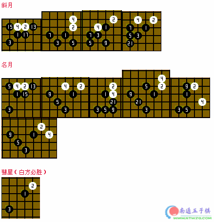
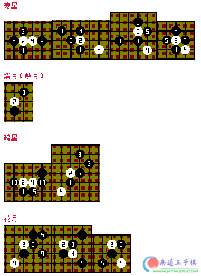
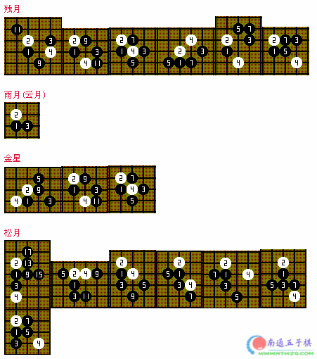
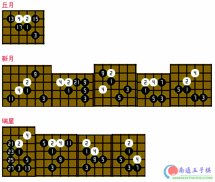
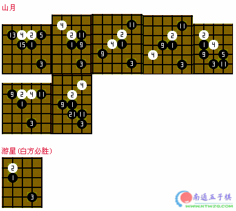

五手两打点
#1 五手两打点作者：有志青年 发表时间：2006-3-9 19:23:58
在下面所有图示中，前三步是开局，第四步是白棋的变化。其它位置是五手两打常见的选点，下面给出的这些选点理论上的评估。
5,7 = 黑方必胜
9,11 = 黑方优势或微占优势
13,15,17 = 平衡局势
19 = 白方优势或微占优势
21,23,25,27 = 白方必胜




［此帖子已被 有志青年 在 2012-4-20 19:43:51 编辑过］
［ 满地风花愁不尽同学于 2014-5-12 21:22:55 时花20金币送鲜花一朵］
#2 Re:五手两打点作者：飞翔 发表时间：2006-3-9 19:59:19
弄的蛮全的嘛。。。
#3 Re:五手两打点作者：空山 发表时间：2006-3-9 20:12:52
广泛搜集，网上的旧货我们基本收全了！
#4 Re:五手两打点作者：qq4114 发表时间：2006-4-6 10:28:24
好东西#5 Re:五手两打点作者：卓越十九 发表时间：2010-6-8 16:54:54
对我初学者来说很有用
#6 Re:五手两打点作者：路宁 发表时间：2013-7-12 16:58:35
真心不错。感谢大神分享。#7 Re:五手两打点作者：五子棋来吧走吧 发表时间：2014-1-27 14:52:02